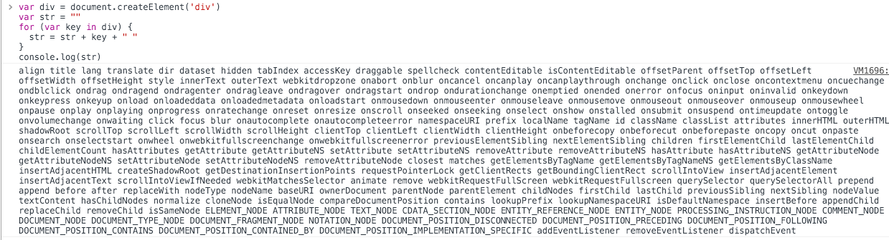

# 一、为什么需要虚拟DOM
先介绍浏览器加载一个
HTML文件需要做哪些事，帮助我们理解为什么我们需要虚拟DOM。webkit引擎的处理流程

所有浏览器的引擎工作流程都差不多，如上图大致分5步：创建
DOM tree–> 创建Style Rules-> 构建Render tree-> 布局Layout–> 绘制Painting
- 第一步，用
HTML分析器，分析HTML元素，构建一颗DOM树。 - 第二步：用
CSS分析器，分析CSS文件和元素上的inline样式，生成页面的样式表。 - 第三步：将上面的
DOM树和样式表，关联起来，构建一颗Render树。这一过程又称为Attachment。每个DOM节点都有attach方法，接受样式信息，返回一个render对象（又名renderer）。这些render对象最终会被构建成一颗Render树。 - 第四步：有了
Render树后，浏览器开始布局，会为每个Render树上的节点确定一个在显示屏上出现的精确坐标值。 - 第五步：
Render数有了，节点显示的位置坐标也有了，最后就是调用每个节点的paint方法，让它们显示出来。
当你用传统的源生
api或jQuery去操作DOM时，浏览器会从构建DOM树开始从头到尾执行一遍流程。比如当你在一次操作时，需要更新10个DOM节点，理想状态是一次性构建完DOM树，再执行后续操作。但浏览器没这么智能，收到第一个更新DOM请求后，并不知道后续还有9次更新操作，因此会马上执行流程，最终执行10次流程。显然例如计算DOM节点的坐标值等都是白白浪费性能，可能这次计算完，紧接着的下一个DOM更新请求，这个节点的坐标值就变了，前面的一次计算是无用功。
- 即使计算机硬件一直在更新迭代，操作
DOM的代价仍旧是昂贵的，频繁操作还是会出现页面卡顿，影响用户的体验。真实的DOM节点，哪怕一个最简单的div也包含着很多属性，可以打印出来直观感受一下

虚拟
DOM就是为了解决这个浏览器性能问题而被设计出来的。例如前面的例子，假如一次操作中有10次更新DOM的动作，虚拟DOM不会立即操作DOM，而是将这10次更新的diff内容保存到本地的一个js对象中，最终将这个js对象一次性attach到DOM树上，通知浏览器去执行绘制工作，这样可以避免大量的无谓的计算量
# 二、实现虚拟DOM
<div id="real-container">
<p>Real DOM</p>
<div>cannot update</div>
<ul>
<li className="item">Item 1</li>
<li className="item">Item 2</li>
<li className="item">Item 3</li>
</ul>
</div>
用
js对象来模拟DOM节点如下
const tree = Element('div', { id: 'virtual-container' }, [
Element('p', {}, ['Virtual DOM']),
Element('div', {}, ['before update']),
Element('ul', {}, [
Element('li', { class: 'item' }, ['Item 1']),
Element('li', { class: 'item' }, ['Item 2']),
Element('li', { class: 'item' }, ['Item 3']),
]),
]);
const root = tree.render();
document.getElementById('virtualDom').appendChild(root);
用
js对象模拟DOM节点的好处是，页面的更新可以先全部反映在js对象上，操作内存中的js对象的速度显然要快多了。等更新完后，再将最终的js对象映射成真实的DOM，交由浏览器去绘制
function Element(tagName, props, children) {
if (!(this instanceof Element)) {
return new Element(tagName, props, children);
}
this.tagName = tagName;
this.props = props || {};
this.children = children || [];
this.key = props ? props.key : undefined;
let count = 0;
this.children.forEach((child) => {
if (child instanceof Element) {
count += child.count;
}
count++;
});
this.count = count;
}
第一个参数是节点名（如
div），第二个参数是节点的属性（如class），第三个参数是子节点（如ul的li）。除了这三个参数会被保存在对象上外，还保存了key和count
有了
js对象后，最终还需要将其映射成真实的DOM
Element.prototype.render = function() {
const el = document.createElement(this.tagName);
const props = this.props;
for (const propName in props) {
setAttr(el, propName, props[propName]);
}
this.children.forEach((child) => {
const childEl = (child instanceof Element) ? child.render() : document.createTextNode(child);
el.appendChild(childEl);
});
return el;
};
根据
DOM名调用源生的createElement创建真实DOM，将DOM的属性全都加到这个DOM元素上，如果有子元素继续递归调用创建子元素，并appendChild挂到该DOM元素上。这样就完成了从创建虚拟DOM到将其映射成真实DOM的全部工作
# 三、Diff算法
我们已经完成了创建虚拟
DOM并将其映射成真实DOM的工作，这样所有的更新都可以先反映到虚拟DOM上，如何反映呢？需要明确一下Diff算法
- 两棵树如果完全比较时间复杂度是
O(n^3) React的Diff算法的时间复杂度是O(n)。要实现这么低的时间复杂度，意味着只能平层地比较两棵树的节点，放弃了深度遍历- 这样做，似乎牺牲了一定的精确性来换取速度，但考虑到现实中前端页面通常也不会跨层级移动
DOM元素，所以这样做是最优的。
我们新创建一棵树，用于和之前的树进行比较
const newTree = Element('div', { id: 'virtual-container' }, [
Element('h3', {}, ['Virtual DOM']), // REPLACE
Element('div', {}, ['after update']), // TEXT
Element('ul', { class: 'marginLeft10' }, [ // PROPS
Element('li', { class: 'item' }, ['Item 1']),
// Element('li', { class: 'item' }, ['Item 2']), // REORDER remove
Element('li', { class: 'item' }, ['Item 3']),
]),
]);
只考虑平层地Diff的话，就简单多了，只需要考虑以下4种情况
第一种是最简单的，节点类型变了，例如下图中的
P变成了h3。我们将这个过程称之为REPLACE。直接将旧节点卸载（componentWillUnmount）并装载新节点（componentWillMount）就行了
旧节点包括下面的子节点都将被卸载，如果新节点和旧节点仅仅是类型不同，但下面的所有子节点都一样时，这样做显得效率不高。但为了避免O(n^3)的时间复杂度，这样做是值得的。这也提醒了React开发者，应该避免无谓的节点类型的变化，例如运行时将div变成p就没什么太大意义
第二种也比较简单，节点类型一样，仅仅属性或属性值变了
renderA: <ul>
renderB: <ul class: 'marginLeft10'>
=> [addAttribute class "marginLeft10"]
我们将这个过程称之为
PROPS。此时不会触发节点的卸载（componentWillUnmount）和装载（componentWillMount）动作。而是执行节点更新（shouldComponentUpdate到componentDidUpdate的一系列方法）
function diffProps(oldNode, newNode) {
const oldProps = oldNode.props;
const newProps = newNode.props;
let key;
const propsPatches = {};
let isSame = true;
// find out different props
for (key in oldProps) {
if (newProps[key] !== oldProps[key]) {
isSame = false;
propsPatches[key] = newProps[key];
}
}
// find out new props
for (key in newProps) {
if (!oldProps.hasOwnProperty(key)) {
isSame = false;
propsPatches[key] = newProps[key];
}
}
return isSame ? null : propsPatches;
}
- 第三种是文本变了，文本对也是一个
Text Node，也比较简单，直接修改文字内容就行了，我们将这个过程称之为TEXT - 第四种是移动，增加，删除子节点，我们将这个过程称之为
REORDER
在中间插入一个节点，程序员写代码很简单：$(B).after(F)。但如何高效地插入呢？简单粗暴的做法是：卸载C，装载F，卸载D，装载C，卸载E，装载D，装载E。如下图
我们写
JSX代码时，如果没有给数组或枚举类型定义一个key，就会看到下面这样的warning。React提醒我们，没有key的话，涉及到移动，增加，删除子节点的操作时，就会用上面那种简单粗暴的做法来更新。虽然程序运行不会有错，但效率太低，因此React会给我们一个warning
如果我们在
JSX里为数组或枚举型元素增加上key后，React就能根据key，直接找到具体的位置进行操作，效率比较高。如下图
常见的最小编辑距离问题，可以用
Levenshtein Distance算法来实现，时间复杂度是O(M*N)，但通常我们只要一些简单的移动就能满足需要，降低点精确性，将时间复杂度降低到O(max(M, N)即可
最终Diff出来的结果如下
{
1: [ {type: REPLACE, node: Element} ],
4: [ {type: TEXT, content: "after update"} ],
5: [ {type: PROPS, props: {class: "marginLeft10"}}, {type: REORDER, moves: [{index: 2, type: 0}]} ],
6: [ {type: REORDER, moves: [{index: 2, type: 0}]} ],
8: [ {type: REORDER, moves: [{index: 2, type: 0}]} ],
9: [ {type: TEXT, content: "Item 3"} ],
}
# 四、映射成真实DOM
虚拟
DOM有了，Diff也有了，现在就可以将Diff应用到真实DOM上了
深度遍历DOM将Diff的内容更新进去
function dfsWalk(node, walker, patches) {
const currentPatches = patches[walker.index];
const len = node.childNodes ? node.childNodes.length : 0;
for (let i = 0; i < len; i++) {
walker.index++;
dfsWalk(node.childNodes[i], walker, patches);
}
if (currentPatches) {
applyPatches(node, currentPatches);
}
}
具体更新的代码如下，其实就是根据
Diff信息调用源生API操作DOM
function applyPatches(node, currentPatches) {
currentPatches.forEach((currentPatch) => {
switch (currentPatch.type) {
case REPLACE: {
const newNode = (typeof currentPatch.node === 'string')
? document.createTextNode(currentPatch.node)
: currentPatch.node.render();
node.parentNode.replaceChild(newNode, node);
break;
}
case REORDER:
reorderChildren(node, currentPatch.moves);
break;
case PROPS:
setProps(node, currentPatch.props);
break;
case TEXT:
if (node.textContent) {
node.textContent = currentPatch.content;
} else {
// ie
node.nodeValue = currentPatch.content;
}
break;
default:
throw new Error(`Unknown patch type ${currentPatch.type}`);
}
});
}
虚拟
DOM的目的是将所有操作累加起来，统计计算出所有的变化后，统一更新一次`DOM